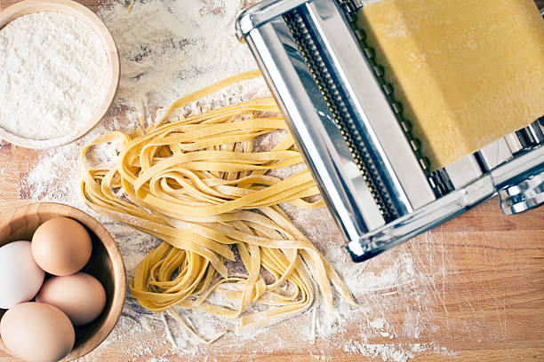

Pasta
- 1 cup all-purpose flour
- ½ teaspoon salt
- 1 egg, beaten
- 2 tablespoons water (Optional)

- Combine flour and salt in a medium bowl. Make a well in the center and add beaten egg. Mix well until a stiff dough forms, adding up to 2 tablespoons water if needed.
- Knead dough on a lightly floured surface until smooth, 3 to 4 minutes.
- Roll dough by hand or with a pasta machine to desired thickness, then cut into strips of desired width and length.